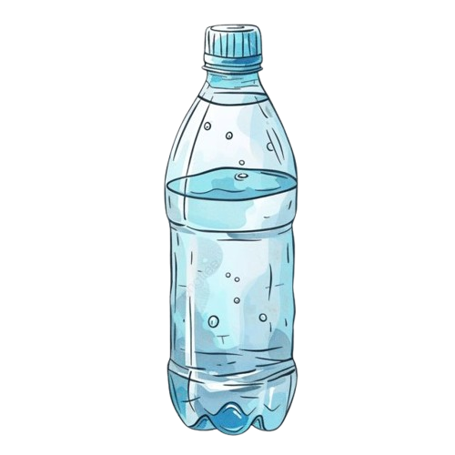
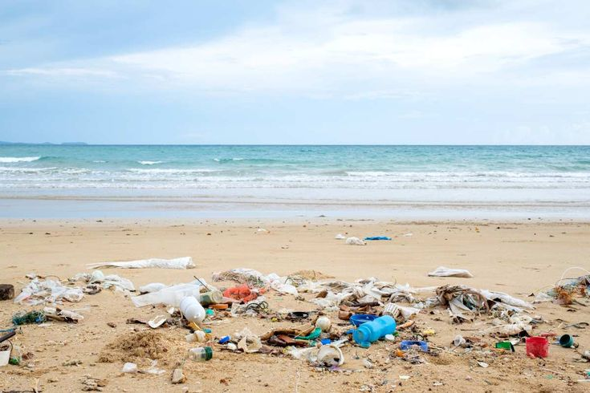
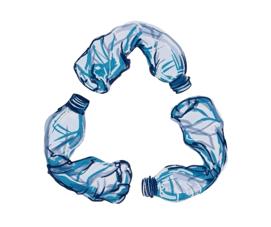
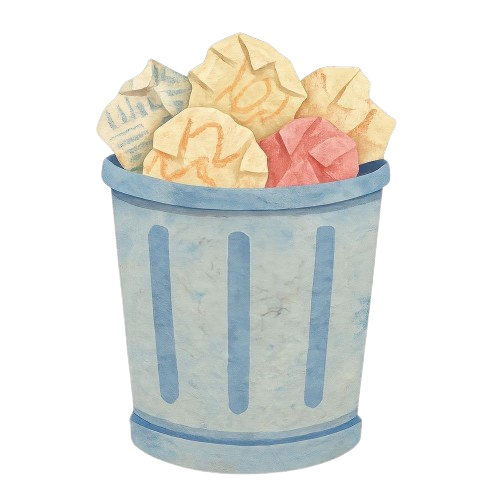

BEFORE
Pantai dipenuhi oleh sampah plastik seperti botol, kantong plastik, dan kemasan makanan. Sampah plastik membuat lingkungan terlihat kotor dan dapat membahayakan hewan serta ekosistem laut.
HEADER
ENVIRONMENTAL AWARENESS
One small piece of plastic can create a much bigger problem.
Pencemaran lingkungan merupakan salah satu masalah yang masih banyak terjadi di berbagai tempat. Salah satu jenis pencemaran yang semakin menjadi perhatian adalah pencemaran akibat sampah plastik. Plastik banyak digunakan dalam kehidupan sehari-hari karena ringan, praktis, dan mudah ditemukan. Namun, penggunaan plastik yang berlebihan dapat menimbulkan masalah bagi lingkungan.
Sampah plastik dapat berasal dari berbagai kegiatan manusia, seperti penggunaan kantong plastik, botol minuman, kemasan makanan, sedotan, dan berbagai produk sekali pakai lainnya. Ketika sampah tersebut tidak dikelola dengan baik, plastik dapat masuk ke sungai, laut, tanah, dan lingkungan di sekitar kita. Plastik membutuhkan waktu yang sangat lama untuk terurai sehingga dapat terus berada di lingkungan dalam waktu yang panjang.
Penggunaan plastik yang terus meningkat dapat menyebabkan jumlah sampah semakin bertambah setiap hari. Jika sampah plastik tidak dikurangi dan dikelola dengan benar, lingkungan dapat menjadi lebih tercemar dan ekosistem dapat terganggu. Oleh karena itu, mengurangi penggunaan plastik sekali pakai, menggunakan kembali barang yang masih layak, dan membuang sampah pada tempatnya merupakan langkah sederhana yang dapat dilakukan untuk membantu menjaga kebersihan lingkungan.




Pantai dipenuhi oleh sampah plastik seperti botol, kantong plastik, dan kemasan makanan. Sampah plastik membuat lingkungan terlihat kotor dan dapat membahayakan hewan serta ekosistem laut.

Setelah sampah plastik dibersihkan, pantai menjadi lebih bersih dan nyaman. Mengurangi penggunaan plastik sekali pakai juga dapat membantu menjaga lingkungan tetap bersih.
.png)

Polusi yang disebabkan oleh gas dan partikel berbahaya di udara.

Polusi yang membuat sungai, danau, dan lautan menjadi tidak aman.

Pencemaran yang disebabkan oleh limbah dan zat berbahaya di dalam tanah.

Suara berlebihan atau mengganggu yang dapat memengaruhi makhluk hidup.
Botol plastik sering kali digunakan dalam waktu singkat sebelum dibuang. Jika tidak dikelola dengan baik, botol-botol tersebut dapat menumpuk dan mencemari lingkungan.



Satu botol mungkin tampak kecil, namun membuang plastik dalam jumlah besar dapat dengan cepat memenuhi tempat sampah dan meningkatkan polusi.

Sampah plastik dapat mencemari lingkungan tempat manusia tinggal. Plastik yang tidak dikelola dengan baik juga dapat mencemari air dan tanah, sehingga dapat mengganggu kesehatan dan kualitas hidup manusia.

Sampah plastik yang dibuang sembarangan dapat terbawa ke sungai dan akhirnya masuk ke laut. Plastik yang menumpuk di laut dapat mencemari air dan mengganggu kehidupan di dalamnya.

Sampah plastik dapat membahayakan hewan yang hidup di darat maupun di laut. Hewan dapat terganggu oleh sampah plastik yang berada di lingkungan dan habitat mereka.
Thank you for taking the time to learn about plastic pollution. Small actions can help make a difference in protecting our environment.